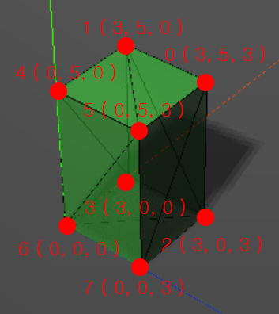

Three.js
Mar 22, 2015 - 이준호
Three.js Core
Mesh
var sphereGeometry = new THREE.SphereGeometry( 4, 20, 20 );
var sphereMaterial = new THREE.MeshBasicMaterial({color:0x7777FF});
var sphere = new THREE.Mesh( sphereGeometry, sphereMaterial );
Geomatry
Three.js에 이미 준비되어 있는 Geomatry들.
geoms = [
new THREE.CylinderGeometry( 1, 4, 4 ),
new THREE.BoxGeometry( 2, 2, 2),
new THREE.SphereGeometry(2),
new THREE.IcosahedronGeometry(4),
new THREE.OctahedronGeometry(3),
new THREE.TetrahedronGeometry(3),
new THREE.TorusGeometry( 3, 1, 10, 10 ),
new THREE.TorusKnotGeometry( 3, 0.5, 50, 20 )
];
Vertex와 Face를 직접 지정하는 것.

var verices = [
new THREE.Vector3( 3, 5, 3 ), // 0
new THREE.Vector3( 3, 5, 0 ), // 1
new THREE.Vector3( 3, 0, 3 ), // 2
new THREE.Vector3( 3, 0, 0 ), // 3
new THREE.Vector3( 0, 5, 0 ), // 4
new THREE.Vector3( 0, 5, 3 ), // 5
new THREE.Vector3( 0, 0, 0 ), // 6
new THREE.Vector3( 0, 0, 3 ) // 7
];
var faces = [
new THREE.Face3( 0, 2, 1 ),
new THREE.Face3( 2, 3, 1 ), // left
new THREE.Face3( 4, 6, 5 ),
new THREE.Face3( 6, 7, 5 ), // right
new THREE.Face3( 4, 5, 1 ),
new THREE.Face3( 5, 0, 1 ), // top
new THREE.Face3( 7, 6, 2 ),
new THREE.Face3( 6, 3, 2 ), // bottom
new THREE.Face3( 5, 7, 0 ),
new THREE.Face3( 7, 2, 0 ), // back
new THREE.Face3( 1, 3, 4 ),
new THREE.Face3( 3, 6, 4 ) // front
];
var geomatry = new THREE.Geometry();
geomatry.verices = vertices;
geomatry.faces = faces;
geomatry.computeFaceNormals(); // face 연산.
vertices update
/* 208 render loop */
mesh.geometry.vertices = vertices; // face를 다시 정의할 필요는 없음. face는 여전히 연결되어 있음.
mesh.geometry.verticesNeedUpdate = true; // 성능을 위해 업데이트 필요시 지정.
mesh.geometry.computeFaceNormals(); // face를 다시 계산.
clone
/* 100 gui */
var geometry = mesh.children[0].geometry.clone(), // Mesh 그룹의 첫번째 Mesh의 Geometry를 복사.
materials = [
new THREE.MeshLambertMaterial({opacity:0.6, color:0xFF44FF, transparent:true}),
new THREE.MeshBasicMaterial({color:0x000000, wireframe:true})
],
mesh2 = THREE.SceneUtils.createMultiMaterialObject( geometry, materials ); // 다른 Material과 결합.
multi material
/* 164 add mesh */
materials = [
new THREE.MeshLambertMaterial({opacity:0.6, color:0x44FF44, transparent:true}),
new THREE.MeshBasicMaterial({color:0x000000, wireframe:true})
];
geom.vertices = vertices;
geom.faces = faces;
geom.computeFaceNormals();
mesh = THREE.SceneUtils.createMultiMaterialObject( geom, materials);
mesh.children.forEach( function(e){e.castShadow = true; } ); // Mesh 그룹을 loop
scene.add(mesh);